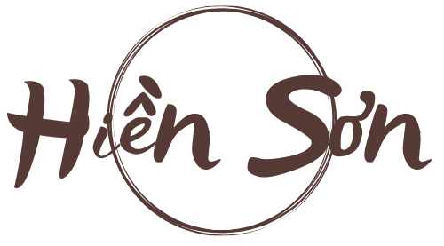

- 
- Hotline: 0968026400
-
Giỏ hàng
Giỏ hàng
Phòng thờ là nơi thể hiện sự tôn kính với tổ tiên và các vị thần linh, do đó, việc lựa chọn và bài trí các vật phẩm lễ cúng trên bàn thờ đóng vai trò vô cùng quan trọng. Mỗi vật phẩm không chỉ mang ý nghĩa tâm linh sâu sắc mà còn cần được sắp xếp theo những quy tắc phong thủy để đảm bảo sự hài hòa, linh thiêng cho không gian thờ cúng. Dưới đây là hướng dẫn về các vật phẩm lễ cúng cần có trong phòng thờ và cách bài trí chúng một cách đúng đắn.
*Hình ảnh minh họa
1. Bát Hương
Bát hương là vật phẩm quan trọng nhất trong phòng thờ, là nơi kết nối giữa thế giới hiện tại và thế giới tâm linh. Bát hương thường được đặt ở vị trí trung tâm của bàn thờ, ngay phía trước các ảnh thờ. Số lượng bát hương trên bàn thờ thường là lẻ, với ba bát hương phổ biến nhất: một bát hương thờ thần linh, một bát hương thờ tổ tiên, và một bát hương thờ gia tiên hoặc ông bà.
Cách bài trí: Đặt bát hương ở vị trí trung tâm, phía trước ảnh thờ. Đảm bảo rằng bát hương luôn sạch sẽ, thường xuyên thay tro và thắp hương đều đặn để giữ gìn sự linh thiêng.
2. Đèn Thờ
Đèn thờ tượng trưng cho ánh sáng linh thiêng, mang lại sự ấm áp và bình yên cho không gian thờ cúng. Đèn thờ thường có hai loại: đèn dầu và đèn điện, tùy thuộc vào sở thích và điều kiện của mỗi gia đình. Đèn thờ cần được thắp sáng thường xuyên, đặc biệt là vào các dịp lễ, Tết hoặc khi cúng bái.
Cách bài trí: Đèn thờ thường được đặt ở hai bên của bàn thờ, đối xứng nhau. Nếu sử dụng đèn điện, hãy chọn loại có ánh sáng ấm, dịu nhẹ để tạo không gian trang nghiêm và linh thiêng.
3. Lọ Hoa
Hoa cúng là biểu tượng của sự tinh khiết, thanh cao, thể hiện lòng tôn kính với tổ tiên và các vị thần linh. Lọ hoa thường được chọn từ các loại hoa có ý nghĩa tốt lành như hoa cúc, hoa huệ, hoa sen, hoa đào (vào dịp Tết), và được cắm vào các lọ hoa đặt trên bàn thờ.
Cách bài trí: Lọ hoa nên được đặt ở một bên bàn thờ, thường là bên trái (theo hướng từ ngoài nhìn vào), đối diện với đĩa trái cây. Nên thay hoa thường xuyên để giữ cho không gian thờ cúng luôn tươi mới và sạch sẽ.
4. Mâm Ngũ Quả
Mâm ngũ quả là biểu tượng của sự đầy đủ, sung túc, và lòng thành kính của gia chủ đối với tổ tiên. Tùy thuộc vào từng vùng miền, mâm ngũ quả có thể bao gồm các loại quả khác nhau, nhưng thường là các loại quả có màu sắc tươi sáng và ý nghĩa tốt lành như chuối, bưởi, cam, quýt, nho, táo.
Cách bài trí: Mâm ngũ quả thường được đặt ở bên phải của bàn thờ, đối diện với lọ hoa. Chú ý chọn những loại quả tươi ngon, đẹp mắt và tránh những loại quả có mùi hương quá mạnh hoặc dễ bị hư hỏng.
5. Nước Cúng
Nước cúng tượng trưng cho sự thanh khiết, trong sạch và là cầu nối giữa con người với thế giới tâm linh. Thường thì một chén nước sạch sẽ được đặt trên bàn thờ mỗi khi cúng bái.
Cách bài trí: Chén nước cúng thường được đặt phía trước bát hương, có thể là một hoặc ba chén, tùy thuộc vào thói quen của gia đình. Nước cần được thay thường xuyên, giữ cho luôn sạch sẽ và tươi mới.
6. Nến Thờ
Nến thờ, tương tự như đèn thờ, mang ý nghĩa về sự soi sáng, dẫn đường cho các vị thần linh và tổ tiên về chứng giám cho lòng thành của gia chủ. Nến thờ thường được làm từ sáp ong, nến điện hoặc nến thơm, mang lại hương thơm dễ chịu cho không gian thờ cúng.
Cách bài trí: Nến thờ được đặt hai bên bát hương, tạo sự đối xứng. Khi thắp nến, hãy chú ý an toàn và tránh để nến cháy quá lâu gây nguy hiểm.
7. Hương (Nhang)
Hương là vật phẩm không thể thiếu trong các lễ cúng, tượng trưng cho lòng thành kính và sự kết nối tâm linh. Hương thường được thắp vào các dịp lễ, Tết, ngày giỗ hoặc khi cầu nguyện.
Cách bài trí: Hương được cắm vào bát hương, số lượng hương cắm thường là số lẻ (thường là 1, 3 hoặc 5 nén). Đảm bảo hương luôn được thắp đúng cách và không để quá nhiều tàn hương gây bừa bộn trên bàn thờ.
8. Trà và Rượu
Trà và rượu là hai loại thức uống thường được dùng để cúng tổ tiên và thần linh trong các dịp lễ, Tết. Chúng tượng trưng cho lòng hiếu khách và sự kính trọng của gia chủ.
Cách bài trí: Trà và rượu thường được đựng trong các chén nhỏ, đặt ở phía trước bát hương. Rượu thường được rót ra trước khi cúng, và trà có thể thay bằng nước chè xanh hoặc nước tinh khiết.
Kết Luận
Mỗi vật phẩm lễ cúng trong phòng thờ đều mang một ý nghĩa tâm linh sâu sắc và cần được bài trí đúng cách để tạo nên một không gian thờ cúng trang nghiêm, linh thiêng. Việc sắp xếp các vật phẩm này không chỉ đòi hỏi sự tỉ mỉ mà còn cần tuân theo những nguyên tắc phong thủy nhất định để đảm bảo sự hài hòa và mang lại may mắn, bình an cho gia đình. Hãy luôn giữ gìn và chăm sóc không gian thờ cúng để bảo vệ những giá trị tinh thần cao quý và duy trì sự kết nối với tổ tiên, thần linh.